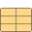

M_NMOS2NMOS MOSFET device |
Information
This information is part of the Modelica Standard Library maintained by the Modelica Association.
The model M_NMOS is a N channel MOSFET transistor with fixed level 2:
The models from the package Semiconductors accesses to the package Internal where all functions,
records and data are stored and modeled that are needed for the semiconductor models.
The package Semiconductors is for user access but not the package Internal.
Parameters (28)
| mtype |
Value: 0 Type: Integer Description: MOSFET type: 0 - N channel, 1 - P channel |
|---|---|
| L |
Value: 1e-4 Type: Length (m) Description: Length |
| W |
Value: 1e-4 Type: Length (m) Description: Width |
| AD |
Value: 0 Type: Area (m²) Description: Area of the drain diffusion |
| AS |
Value: 0 Type: Area (m²) Description: Area of the source diffusion |
| PD |
Value: 0 Type: Length (m) Description: Perimeter of the drain junction |
| PS |
Value: 0 Type: Length (m) Description: Perimeter of the source junction |
| NRD |
Value: 1 Type: Real Description: Number of squares of the drain diffusions |
| NRS |
Value: 1 Type: Real Description: Number of squares of the source diffusions |
| OFF |
Value: 0 Type: Integer Description: Optional initial condition: 0 - IC not used, 1 - IC used, not implemented yet |
| IC_VDS |
Value: -1e40 Type: Voltage (V) Description: Initial condition value (VDS, not implemented yet) |
| IC_VGS |
Value: -1e40 Type: Voltage (V) Description: Initial condition value (VGS, not implemented yet) |
| IC_VBS |
Value: -1e40 Type: Voltage (V) Description: Initial condition value (VBS, not implemented yet) |
| UIC |
Value: false Type: Boolean Description: Use initial conditions: true, if initial condition is used |
| TEMP |
Value: 27 Type: Temp_C (°C) Description: Operating temperature of the device |
| modelcard |
Value: Type: ModelcardMOS2 Description: MOSFET modelcard |
| p |
Value: Spice3.Internal.Mos2.mos2RenameParametersRevised(modelcard) Type: Mos2ModelLineParams Description: Model line parameters |
| m |
Value: Spice3.Internal.Mosfet.mosfetRenameParametersDev(W, L, AD, AS, PD, PS, NRD, NRS, OFF, IC_VDS, IC_VGS, IC_VBS, UIC, TEMP) Type: Mosfet Description: Renamed parameters |
| m1 |
Value: Spice3.Internal.Mosfet.mosfetInitEquations(m) Type: Mosfet |
| m_type |
Value: if m.m_bPMOS > 0.5 then -1 else 1 Type: Integer Description: Type of the transistor |
| p1 |
Value: Spice3.Internal.Mos2.mos2ModelLineParamsInitEquationsRevised(p, m_type) Type: Mos2ModelLineParams Description: Model line variables |
| c11 |
Value: Spice3.Internal.Mos.mos2CalcInitEquationsRevised(p1, m1) Type: Mos2Calc Description: Precalculated parameters |
| c22 |
Value: Spice3.Internal.Mos.mos2CalcCalcTempDependenciesRevised(p1, m1, c11, m_type) Type: Mos2Calc Description: Precalculated parameters |
| IC |
Value: Type: Voltage (V) Description: Initial condition values, not implemented yet |
| vp |
Value: Spice3.Internal.Mos2.mos2ModelLineParamsInitEquations(p, C, m_type) Type: Mos2ModelLineVariables Description: Model line variables |
| c1 |
Value: Spice3.Internal.Mos.mos2CalcInitEquations(p, C, vp, m) Type: Mos2Calc Description: Precalculated parameters |
| c2 |
Value: Spice3.Internal.Mos.mos2CalcCalcTempDependencies(p, C, vp, m, c1, m_type) Type: Mos2Calc Description: Precalculated parameters |
| p_obsolete |
Value: Spice3.Internal.Mos2.mos2RenameParameters(modelcard, C) Type: Mos2ModelLineParams Description: Model line parameters |
Connectors (4)
| G |
Type: PositivePin Description: gate node |
|
|---|---|---|
| D |
Type: PositivePin Description: drain node |
|
| S |
Type: NegativePin Description: source node |
|
| B |
Type: PositivePin Description: bulk node |
Components (15)
|  | modelcard |
Type: ModelcardMOS2 Description: MOSFET modelcard |
|---|---|---|
| p |
Type: Mos2ModelLineParams Description: Model line parameters |
|
| m |
Type: Mosfet Description: Renamed parameters |
|
| m1 |
Type: Mosfet |
|
| p1 |
Type: Mos2ModelLineParams Description: Model line variables |
|
| c11 |
Type: Mos2Calc Description: Precalculated parameters |
|
| c22 |
Type: Mos2Calc Description: Precalculated parameters |
|
| cc |
Type: CurrrentsCapacitances |
|
| qm |
Type: DEVqmeyer |
|
| cc_obsolete |
Type: CurrrentsCapacitances |
|
| vp |
Type: Mos2ModelLineVariables Description: Model line variables |
|
| c1 |
Type: Mos2Calc Description: Precalculated parameters |
|
| c2 |
Type: Mos2Calc Description: Precalculated parameters |
|
| p_obsolete |
Type: Mos2ModelLineParams Description: Model line parameters |
|
| C |
Type: SpiceConstants Description: General constants of SPICE simulator |